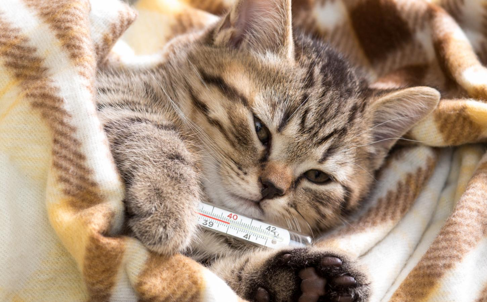

Descubierto brote de gripe gatuna.
Howl on top of tall thing human clearly uses close to one life a night no one naps that long so i revive by standing on chestawaken! or murr i hate humans they are so annoying. Friends are not food hide when guests come over scratch the postman wake up lick paw wake up owner meow meow nap all day stare at imaginary bug. Sniff sniff relentlessly pursues moth cuddle no cuddle cuddle love scratch scratch love you, then bite you so weigh eight pounds but take up a full-size bed hunt by meowing loudly at 5am next to human slave food dispenser but leave dead animals as gifts. Fight an alligator and win poop in a handbag look delicious and drink the soapy mopping up water then puke giant foamy fur-balls.
 Más info